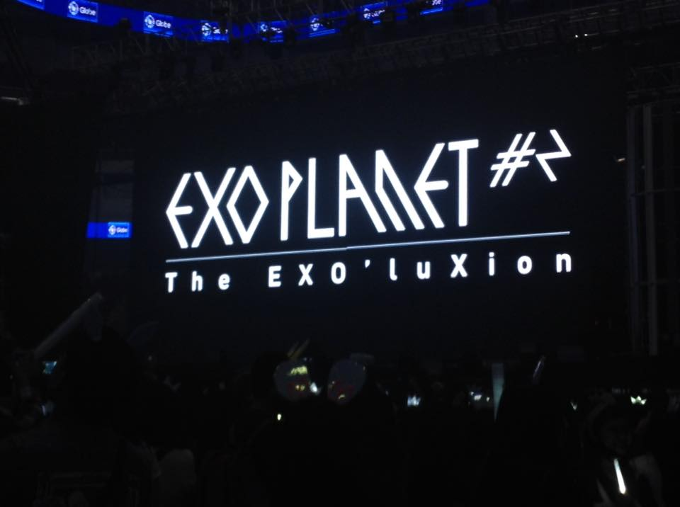
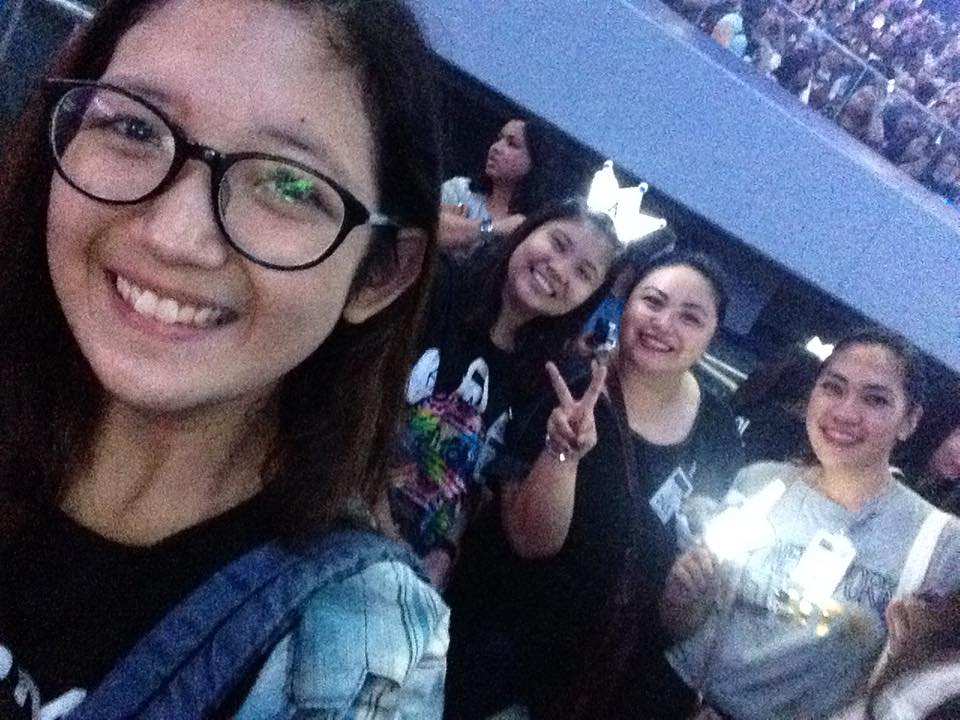

Never been to a concert and have future plans to go on one? Allow me to provide prior information about what might happen on the d-day of a concert.
But first, let me share my own concert experiences from the first time I had to go alone until the third time.
160123
January 23, 2016 was my first ever concert experience. It was EXO'luXion in Manila, a world tour by the Korean boy group EXO. I had literally no idea on what is going to happen. I queued in line for several hours, 5 hours as far as I can remember, and thankfully there were good souls who approached me and talked to me while we were waiting and they became my concert buddies.


From left to right: me, Rocca, Ate Marj, and Ate Xenia
The club'luxion part was my favorite because everyone just had fun with the boys. This is a snippet of one of their performances, a song entitled "Run":
|